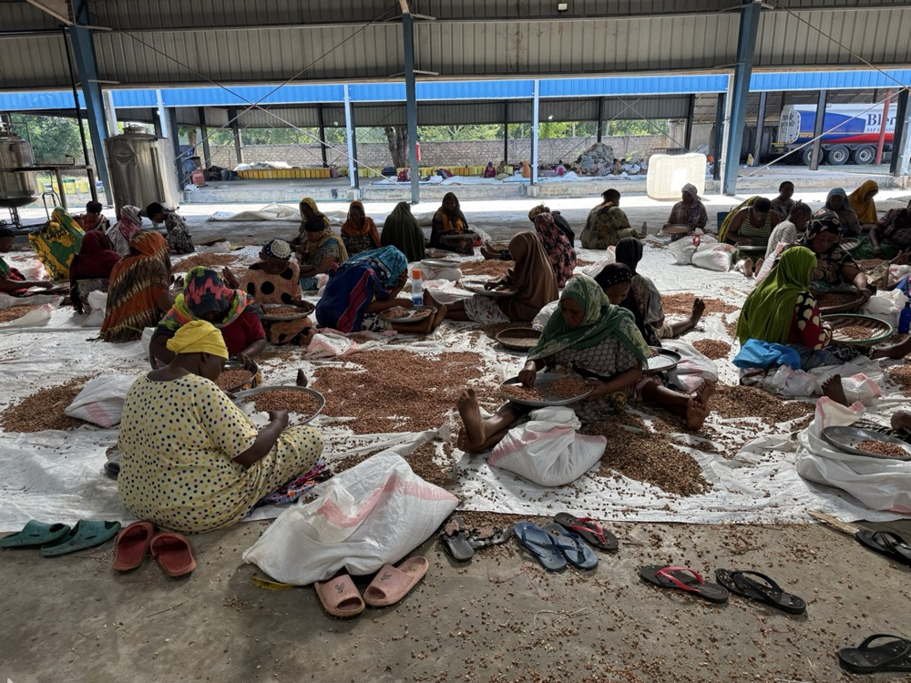
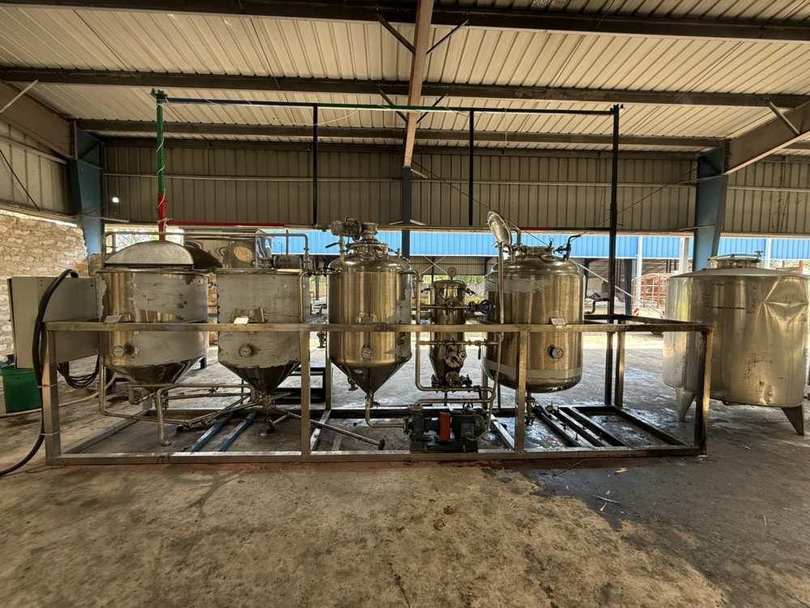

Plenty of ideas are exciting. Few are investable. The gap is structure: a market that pays, money that lasts, and margin that holds.
Free Delivery Score: 15 Yes/No questions, about 4 minutes, instant result.
A market too small, a margin too thin, a runway too short. Each one is cheap to fix early and fatal to miss late. Most are only discovered after the money’s been spent.
A strong idea and real momentum, but no structure an investor recognises yet.
A business that runs on you, and now needs to be fundable, sellable or scalable.
A new venture that has to stand on its own commercials.
Why ventures fail at the model, not the idea.
See the START Special Report and articles

Opportunity to venture to investable platform.
The same five controls apply at every stage. What changes is where you start.
Free. See where the venture holds and what to fix first, then bring your result to a free 45-minute review call.
Get my Delivery Score — free →AI contract review, in private beta, with a free sample. Not legal advice.
Visit The Contract ClerkYes. It scores the same five controls on any project, including a venture being set up. A low score early on shows which controls to put in place before you build.
Bring your result to a free 45-minute review call. You leave with a plan you can act on.
The Contract Clerk offers AI contract review, in private beta, with a free sample. Not legal advice.
Get your free Delivery Score. It takes about four minutes and shows your level on The Delivery Control Ladder™. There’s a full list of stages on the homepage.
Fifteen Yes/No questions. About four minutes. Your Delivery Score straight away.